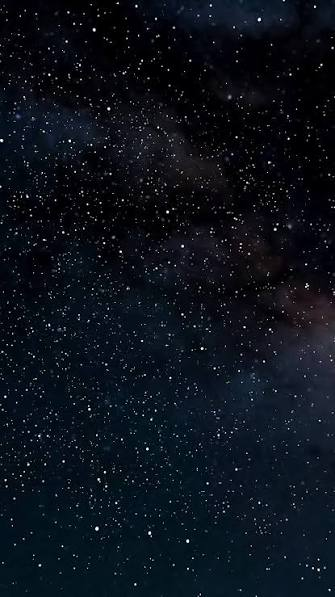
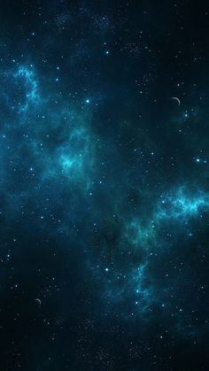
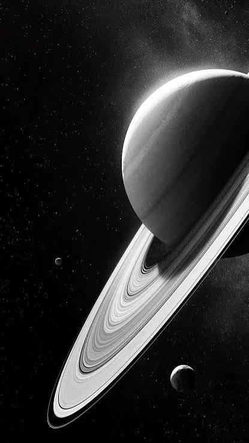
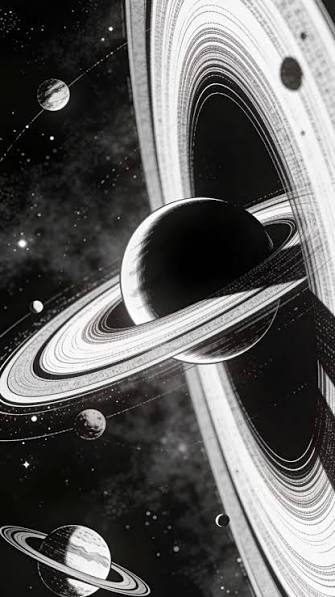
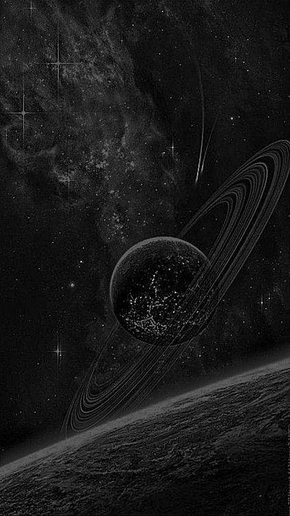

<!doctype html>
<html lang="it">
<meta charset="utf-8">
<meta name="viewport" content="width=device-width,initial-scale=1">
<title>Provini della testata AD ASTRA</title>
<style>
body{margin:0;background:#0b1320;color:#f4f5f7;font:16px Arial,sans-serif}
main{max-width:1500px;margin:auto;padding:1rem}
h2{font-size:1rem;margin:1.4rem 0 .6rem}
.banner{position:relative;aspect-ratio:2170/478;overflow:hidden;isolation:isolate;background:#030913}
.sky{position:absolute;inset:0;display:grid;place-items:center;overflow:hidden}
.sky img{width:clamp(180px,30vw,375px);max-width:none;grid-area:1/1;transform:rotate(var(--turn));mask-image:radial-gradient(ellipse farthest-side,#000 38%,transparent 100%)}
.stars{--turn:-90deg}.nebula{--turn:90deg}
.nebula .sky img{
  position:absolute;
  top:50%;
  left:50%;
  width:clamp(155px,33vw,460px);
  transform:translate(-50%,-50%) rotate(90deg);
  mask-image:linear-gradient(0deg,transparent,#000 12%,#000 88%,transparent);
}
.nebula .title{text-shadow:0 1px 5px #000,0 0 12px #000}

.mark,.wordmark{position:absolute;inset:0;width:100%;height:100%;mix-blend-mode:screen}
.mark{clip-path:inset(22% 86.9% 27% 2.2%);filter:grayscale(1) brightness(.82) contrast(1.3)}
.wordmark{clip-path:inset(40.8% 54% 43.7% 14.1%);filter:grayscale(1) brightness(.82) contrast(1.3)}
.rule{position:absolute;left:52.7%;top:30%;height:39%;border-left:2px solid #e6edf6}
.title{position:absolute;left:58%;right:3%;top:50%;transform:translateY(-50%)}
.title strong{display:block;color:#ffd35f;font-size:clamp(.65rem,3.1vw,2.9rem)}
.title span{display:block;font-size:clamp(.45rem,1.5vw,1.4rem);margin-top:.3em}
.planet{--turn:-90deg;background:#08090b}
.planet .sky{inset:0 0 0 38%}
.planet .sky img{width:clamp(160px,29vw,420px);mask-image:linear-gradient(0deg,transparent,#000 18%,#000 82%,transparent)}
.planet .sky::after{content:"";position:absolute;inset:0;background:linear-gradient(90deg,#08090b,transparent 34%,#08090b35)}
.planet .title{text-shadow:0 1px 5px #000,0 0 14px #000}
.nebula-full{container-type:inline-size}
.nebula-full .sky img{
  position:absolute;
  top:50%;
  left:50%;
  width:56.25cqw;
  transform:translate(-50%,-50%) rotate(-90deg);
  mask-image:none;
}
.logo-originale {
  position: absolute;
  left: 1.8%;
  top: 47.4%;
  width: 11.5%;
  height: auto;
  transform: translateY(-50%);
}
.logo-interno { clip-path: circle(45.6% at 50.1% 49.4%); }
.logo-raggi { mix-blend-mode: screen; }
.nebula-full .title{text-shadow:0 1px 5px #000,0 0 12px #000}
</style>
<main>
  <h1>Provini del banner superiore AD ASTRA</h1>
  <h2>06 · Nebulosa a tutta larghezza</h2>
  <header id="provino-06" class="banner nebula-full" aria-label="AD ASTRA · Videoteca scientifica">
    <div class="sky"></div>
    
    
    
    <span class="rule" aria-hidden="true"></span>
    <div class="title"><strong>VIDEOTECA SCIENTIFICA</strong><span>Playlist e percorsi video di astronomia</span></div>
  </header>
  <h2>01 · Campo stellare</h2>
  <header class="banner stars" aria-label="AD ASTRA · Videoteca scientifica">
    <div class="sky"></div>
    
    
    <span class="rule" aria-hidden="true"></span>
    <div class="title"><strong>VIDEOTECA SCIENTIFICA</strong><span>Playlist e percorsi video di astronomia</span></div>
  </header>
  <h2>02 · Nebulosa blu</h2>
  <header class="banner nebula" aria-label="AD ASTRA · Videoteca scientifica">
    <div class="sky"></div>
    
    
    <span class="rule" aria-hidden="true"></span>
    <div class="title"><strong>VIDEOTECA SCIENTIFICA</strong><span>Playlist e percorsi video di astronomia</span></div>
  </header>
  <h2>03 · Saturno in controluce</h2>
  <header class="banner planet" aria-label="AD ASTRA · Videoteca scientifica">
    <div class="sky"></div>
    
    
    <span class="rule" aria-hidden="true"></span>
    <div class="title"><strong>VIDEOTECA SCIENTIFICA</strong><span>Playlist e percorsi video di astronomia</span></div>
  </header>
  <h2>04 · Pianeti e anelli</h2>
  <header class="banner planet" aria-label="AD ASTRA · Videoteca scientifica">
    <div class="sky"></div>
    
    
    <span class="rule" aria-hidden="true"></span>
    <div class="title"><strong>VIDEOTECA SCIENTIFICA</strong><span>Playlist e percorsi video di astronomia</span></div>
  </header>
  <h2>05 · Orizzonte e anelli</h2>
  <header class="banner planet" aria-label="AD ASTRA · Videoteca scientifica">
    <div class="sky"></div>
    
    
    <span class="rule" aria-hidden="true"></span>
    <div class="title"><strong>VIDEOTECA SCIENTIFICA</strong><span>Playlist e percorsi video di astronomia</span></div>
  </header>
</main>
